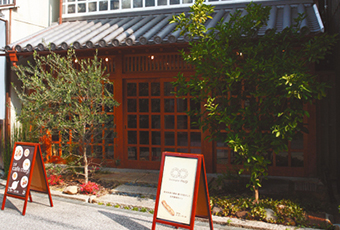
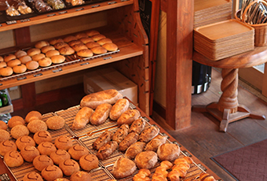
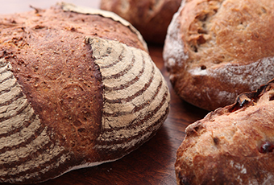

SHOP INFORMATIONBoulangerie mugi
心で感じる美味しい天然酵母パンはいかが？

倉敷美観地区にあるBoulangerie mugiは、美観地区でのおさんぽ途中に気軽に立ち寄れる素敵な町のパン屋さんです。
倉敷駅前から続く商店街の中でも、美観地区に程近い本通り商店街の中ほどに青々と茂る2本の木。そこがBoulangerie mugiのエントランスです。建物は倉敷に昔からあるものをイメージしたもの。移築もしくはリノベーション？と思いきや、開店時にすべて新しく建てたものだそう！
天然酵母のこだわり素材

がらがら…と引戸を開けると、香ばしいパンのにおいにいっきにつつまれます！大きな台の上にぎっしりと並べられたパンたちに迎えられて、テンションあがります。
パンの生地に使用している原材料は、天然酵母と自然海塩を使用し、長時間発酵することで素材本来の風味・香りを引き出しているんだそう。多くのお客様からのご要望を頂き、現在、国産小麦・国産ライ麦・国産スペルト小麦は一切使用しておらず、その他の原材料もほとんどを欧米、一部海外主要原産国に変更し、国産の場合、無農薬無化学肥料の自家農園や中四国・九州地方の材料を中心に使用しているとのこと。
気軽に立ち寄れる町のパン屋さん

「Boulangerie mugi」は、倉敷駅から中央通りを南へ歩いて約10分のところに位置します。商店街や美観地区などが近くにあるので毎日のお買い物や観光にのついでにもとても便利。こだわりの材料を使用したパンを食べながら、ゆっくりとした時間を過ごしてみてはいかがですか。倉敷へ訪れた際には、ぜひ一度足を運んでみてください。
Googleマップでみる
一覧に戻る